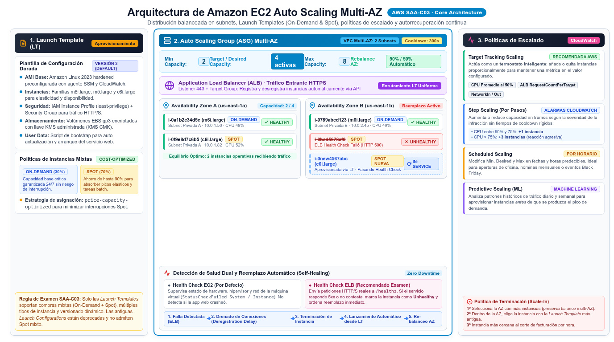

EC2 Auto Scaling Amazon EC2 Auto Scaling groups
El termostato de tu flota EC2: mantiene la capacidad deseada, reemplaza lo enfermo y escala con la carga — el corazón de "design resilient architectures" (D2).
Un Auto Scaling group (ASG) es una agrupación lógica de instancias EC2 gestionada como una manada: el grupo lanza instancias hasta su desired capacity, las vigila con health checks periódicos, y si una enferma la termina y lanza otra en su lugar. Además puede crecer y encoger entre un mínimo y un máximo según políticas de escalado. La imagen mental correcta es la de un termostato: defines la temperatura que quieres (p. ej. "CPU del grupo al 50%") y el sistema enciende o apaga "radiadores" (instancias) solos, sin que tú toques nada.
Lo que el examen evalúa no es crear el ASG sino las decisiones alrededor: qué política de escalado encaja con cada patrón de tráfico, cómo se comporta el grupo multi-AZ, qué pasa cuando una Spot se interrumpe (el grupo intenta lanzar reemplazo para mantener la capacidad) y qué health check detecta qué tipo de fallo. La pieza previa obligatoria es la launch template: la plantilla reutilizable (AMI, instance type, security groups, options de compra) de la que el ASG fabrica instancias idénticas — y que, además, es lo único que permite mezclar On-Demand y Spot dentro del mismo grupo.

Anatomía del grupo: capacidad, salud y equilibrio
El grupo mantiene el número de instancias del desired capacity aunque las cosas se rompan: si una instancia pasa a unhealthy — porque falla el check de EC2 o el del load balancer — el ASG la termina y lanza el reemplazo. Si especificas varias AZ, la capacidad deseada se distribuye entre ellas y, tras cada acción de escalado, el ASG re-equilibra automáticamente el reparto. Esta es la razón por la que "alta disponibilidad multi-AZ con reemplazo automático" se responde con ASG + ALB en lugar de instancias sueltas: el reemplazo no es manual, y una AZ caída no vacía el grupo (el balance repone en las AZ sanas).
Un matiz que distingue respuestas correctas: el check por defecto es el de EC2 (el hypervisor ve la instancia), pero para detectar fallos de aplicación (el SO vive pero la app no responde) hay que habilitar los ELB health checks del balanceador que está delante del grupo. El enunciado típico: "instance passes EC2 checks but the application on port 8080 fails" → habilitar ELB health checks en el ASG. Complementos de la anatomía que aparecen como respuesta: lifecycle hooks (pausan el lanzamiento/terminación para instalar software o drenar conexiones) y warm pools (instancias pre-inicializadas en estado pausado que eliminan la latencia de arranque de apps con boot largo).
Políticas de escalado: target tracking, step y simple
La política estrella del examen es target tracking: eliges una métrica y un valor objetivo, y EC2 Auto Scaling crea y gestiona por ti las alarmas de CloudWatch que disparan el escalado. El ejemplo oficial: con un objetivo de average CPU utilization del 50%, el grupo escala out cuando la CPU supera el 50% y hace scale in cuando baja, para mantener rendimiento y costo óptimos. Las métricas predefinidas son cuatro — ASGAverageCPUUtilization, ASGAverageNetworkIn, ASGAverageNetworkOut y ALBRequestCountPerTarget — y puedes usar métricas custom o de alta resolución para casos más finos. Es la respuesta por defecto cuando el enunciado pide "scale based on CPU/requests per target without managing alarms".
Step scaling y simple scaling son las políticas de la vieja escuela: responden a una alarma de CloudWatch que tú defines y gestionas. La simple hace un único ajuste por alarma y espera; la de pasos ajusta en función del tamaño de la brecha (cuanto más lejos el umbral, más agresivo el ajuste). Añade scheduled scaling para patrones predecibles (picos cada lunes a las 9:00, retail en Black Friday): la acción se programa de antemano, sin métrica de por medio. Y recuerda la regla de convivencia de la doc oficial para múltiples políticas target tracking: el grupo prioriza la disponibilidad — hace scale out si cualquiera de las políticas lo pide, pero solo hace scale in si todas las políticas (con scale-in habilitado) lo acuerdan.
| Política | Cómo decide | Gestiona las alarmas | Cuándo es la respuesta |
|---|---|---|---|
| Target tracking | Métrica + valor objetivo (termostato) | Sí, CloudWatch automáticamente | Casos normales: mantener CPU al X%, requests per target, network in/out. Sin operar alarmas. |
| Step scaling | Brecha del umbral → pasos de ajuste mayores | No, las defines tú | Escalado agresivo proporcional a la magnitud de la brecha; personalización fina. |
| Simple scaling | Un ajuste por alarma + cooldown | No, las defines tú | El enunciado la menciona casi solo como distractor frente a target tracking. |
| Scheduled | Fecha/hora programada | — | Picos de tráfico predecibles y conocidos de antemano. |
Cooldown, warm-up y límites del grupo
Entre una acción de escalado y la siguiente el grupo debe esperar: el cooldown (por defecto 300 segundos) evita que el ASG lance instancias nuevas antes de que las recientes absorban carga — es la respuesta a "la flota escala demasiado agresivamente y luego hace scale in de golpe" (además de revisar el objetivo de la métrica, ajusta cooldown y instance warmup, el tiempo que una instancia tarda en estar lista para recibir tráfico). El scale in también se puede blindar: la instance scale-in protection impide que el ASG termine instancias concretas (la de la base de datos del clúster, por ejemplo), y las terminaciones de Spot disparan intentos de reemplazo para mantener el desired capacity. Fíjate en cómo estos mecanismos completan el ciclo de la Figura 1: la misma manada que se autorregula también se protege contra su propia inercia, y el conjunto funciona sin scripts ni Lambda de por medio — exactamente el estándar de "menos sobrecarga operativa" que el examen premia frente a soluciones artesanales de CloudWatch + acciones manuales.
Cómo cae en el examen: señales y respuestas
Las preguntas de Auto Scaling casi siempre se pueden reducir a un mapeo entre una frase del enunciado y un mecanismo concreto del grupo. La tabla siguiente resume las que más se repiten en las prácticas oficiales y en el banco de preguntas de esta guía — recórrela hasta que la asociación sea automática, porque en el examen real el distractor siempre describe un mecanismo vecino (por ejemplo, proponer scheduled scaling cuando la carga no es predecible, o simple scaling donde target tracking haría todo solo).
| Si el enunciado dice… | La respuesta apunta a… |
|---|---|
| "maintain availability and replace failed instances automatically" | Auto Scaling group multi-AZ + health checks (con ELB checks si el fallo es de app) |
| "scale based on CPU utilization without managing alarms" | Target tracking con ASGAverageCPUUtilization |
| "requests per target on the ALB" | Target tracking con ALBRequestCountPerTarget |
| "traffic increases every Monday at 9 am" | Scheduled scaling |
| "instances take 10 minutes to bootstrap" | Warm pools / instance warmup ajustado |
| "run custom actions when instances launch or terminate" | Lifecycle hooks |
| "reduce cost for interruptible extra capacity" | Mix On-Demand + Spot en el ASG vía launch template |
ASGAverageCPUUtilization; (3) "app tarda mucho en arrancar" → warm pools o revisar warmup, nunca "lanzar más instancias manualmente". Si el enunciado mezcla capacidad garantizada y descuento: ASG con mix On-Demand + Spot vía launch template y On-Demand como base (capacity reels / purchase options).
- ASG = min / desired / max + reemplazo automático de instancias unhealthy.
- La launch template es la fuente de la que nacen las instancias; sin ella no hay mix On-Demand + Spot.
- Target tracking crea y gestiona las alarmas CloudWatch por ti — termostato con métrica objetivo.
- Métricas predefinidas:
ASGAverageCPUUtilization,ASGAverageNetworkIn/Out,ALBRequestCountPerTarget. - Escalado multi-AZ: la capacidad se re-equilibra entre AZ tras cada acción; una AZ caída no desmantela el grupo.
- Fallos de aplicación (no del SO) → habilitar ELB health checks en el ASG.
- Cooldown por defecto 300 s y instance warmup: pausas entre acciones para no sobre-escalar.
- Boot lento → warm pools; custom actions al lanzar/terminar → lifecycle hooks.
- CMP-13 Amazon EC2 Auto Scaling — Auto Scaling groups (health checks, AZs) · docs.aws.amazon.com/autoscaling/ec2/userguide/AutoScalingGroup.html
- CMP-14 Amazon EC2 Auto Scaling — Target tracking scaling policies · docs.aws.amazon.com/autoscaling/ec2/userguide/as-scaling-target-tracking.html